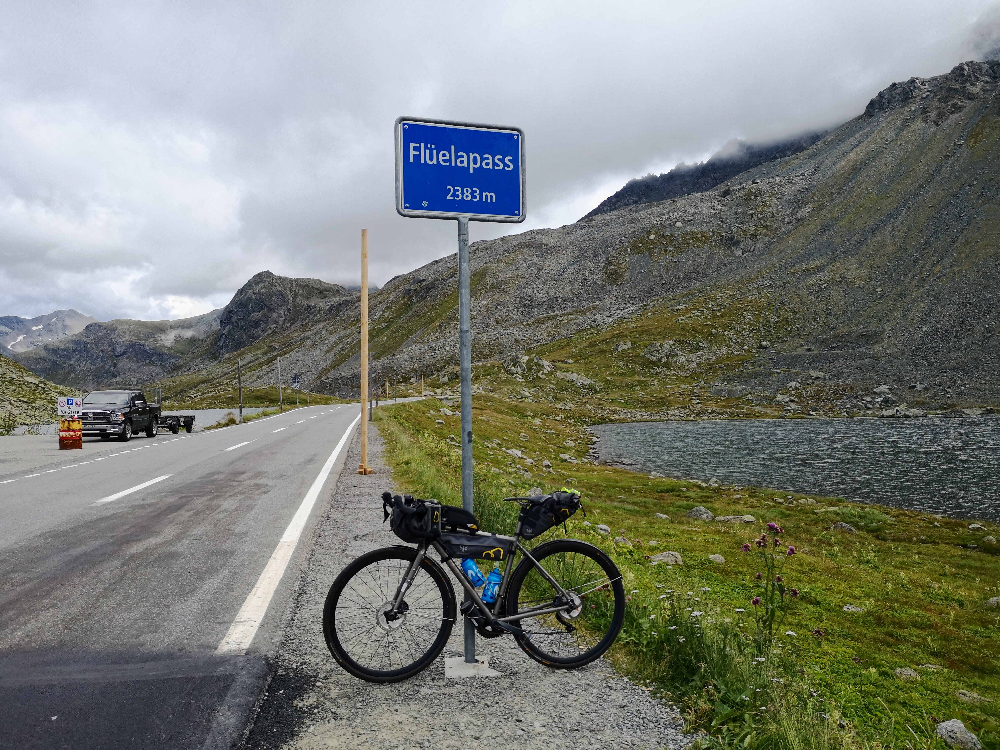

Index
Switzerland 2019
Summary of my bicycle trip around Switzerland in August 2020.
Start: Monday, August 24.
Originally planned route:
map 1/2
map 2/2

View more images in the gallery
| day |
from |
to |
highlights |
distance (km) |
altitude (m) |
strava |
relive |
| 1 |
Neukirch (TG) |
Cinuos Chell (GR) |
Flueelapass (2383m) |
182 |
2466 |
strava |
relive |